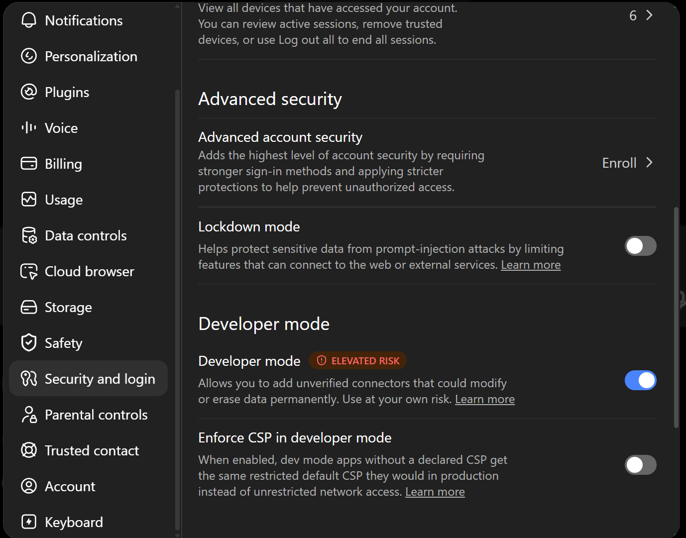
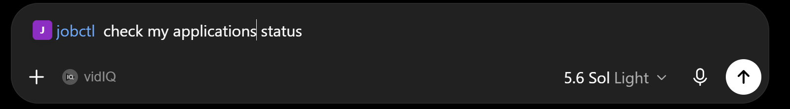

Connect your agent
jobctl works with any MCP client. Every guide below ends the same way: you just talk about your job search, the agent keeps the tracker current, and you review at app.jobctl.app.
Claude Code token
- Create an API token at app.jobctl.app/settings → API Tokens (shown once).
- Run one command:
claude mcp add --transport http jobctl https://app.jobctl.app/mcp \ --header "Authorization: Bearer jc_..."
# then just talk: "I applied to Bosch as Tech Lead, prio A, follow up friday"
Codex CLI OAuth
No token needed - Codex discovers jobctl's OAuth automatically and opens the sign-in.
codex mcp add jobctl --url https://app.jobctl.app/mcp
If the browser window does not open, run codex mcp login jobctl.
ChatGPT OAuth · Plus/Pro
- Open Settings → Security and login and enable Developer mode:

- Open Settings → Plugins and click + (New Plugin).
- Name it
jobctl, set Connection → Server URL tohttps://app.jobctl.app/mcp, Authentication: OAuth, confirm the risk checkbox and hit Create. - ChatGPT shows "Add jobctl to ChatGPT" → Sign in with jobctl → enter your email → magic link → Allow.
- In a chat, type
@jobctl(or the name you gave the plugin) to invoke it - or enable it in the tools menu and just talk:

@jobctl check my applications status
claude.ai OAuth
- Open Settings → Connectors → Add custom connector.
- URL:
https://app.jobctl.app/mcp - Sign in with your jobctl account when prompted.
Claude Code plugin optional
A skill that gives Claude job-tracking instincts - it records applications, interviews and rejections without being asked. Connect the MCP server first (see Claude Code), then:
/plugin marketplace add DmytroRybka/jobctl-claude /plugin install jobctl@jobctl
"Siemens invited me to a Get2Know call, Thursday 9:00" ✓ status → interview · interview logged with attendees · prep reminder set
Terminal CLI token
No agent required - the raw one-liner parser understands dates, priorities and sources.
npx jobctl login jc_... npx jobctl add "Bosch, Tech Lead, prio A, due friday, remote" npx jobctl due
Other MCP clients token
Cursor, Windsurf and most editors accept a standard MCP config block:
{
"mcpServers": {
"jobctl": {
"type": "http",
"url": "https://app.jobctl.app/mcp",
"headers": {
"Authorization": "Bearer <YOUR_API_TOKEN>"
}
}
}
}
Clients with OAuth support can skip the token entirely - jobctl advertises OAuth discovery at
/.well-known/oauth-authorization-server.